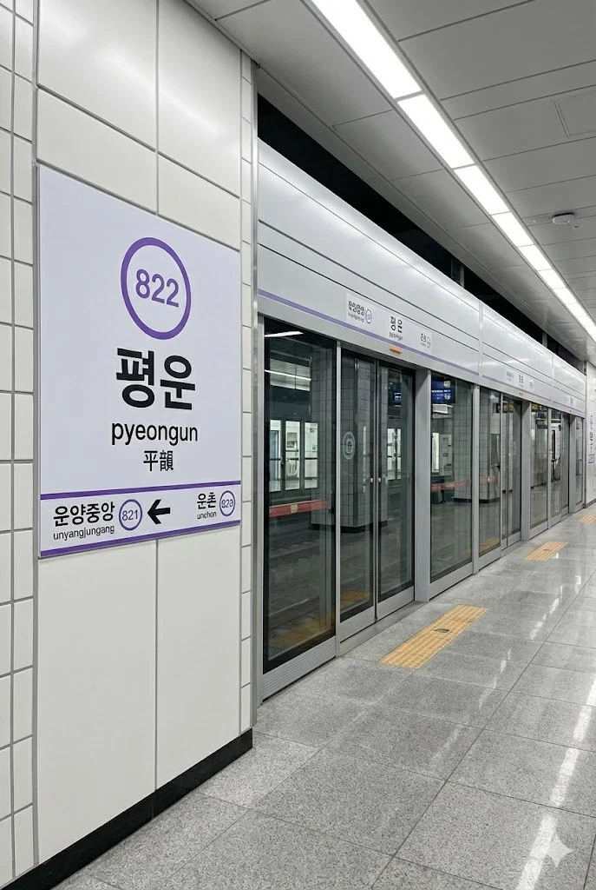

효빈 도시철도 8호선 815번. 효빈광역시 남구 운양동 소재. 8호선 경전철이 남구의 고질적인 정체를 뚫고 지나가며 세워진 역이다.
평평한 들판에 구름(雲)이 머무는 곳이라 하여 평운(平雲)이라 불린다. 지상 역사로 지어져 주변 시야가 탁 트여 있으며, 가을철 노을이 지는 모습이 꽤나 아름답다. 하지만 게이머들에게는 다른 의미로 아름다운 곳이다.

| ↑ 신거 | |||
| 하 | ㅣ | ㅣ | 상 |
| ↓ 운양중앙 | |||
남구 운양동 일대의 촘촘한 연계망을 책임지는 대규모 버스 노선들이 역 바로 앞 정류장에 대거 정차한다. 8호선 고가 경전철과 유기적으로 맞물려 운양동 거주 주민들과 가챠 명당을 찾아온 덕후들의 핵심 환승 거점 역할을 톡톡히 수행하고 있다. 버스가 이렇게 잘 다니는데 도보 10분을 걸어가라 한 전임 편집자는 대가리를 박아야 한다.
| 구분 | 정류소명 | 경유 노선 |
|---|---|---|
| 간선버스 | 평운역 | 79, 89 |
| 지선버스 | 평운역 | 391, 792, 892 |
8호선 내에서 뒤에서 4등을 차지할 정도로 이용객 수가 저조한 역이다. 주변이 워낙 조용한 주거 지역이라 평시에는 승객보다 역무원이 더 자주 보일 정도로 공기 수송의 진수를 보여준다.
| 평운역 이용객 통계 | ||
|---|---|---|
| 연도 | 일평균 이용객 | 비고 |
| 2024년 | 2,347명 | 8호선 개통 원년 |